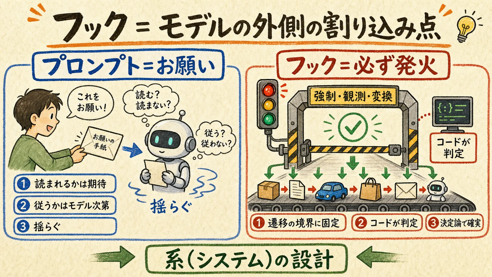
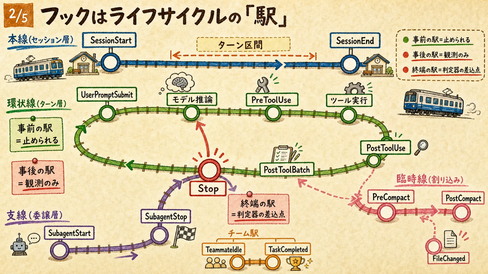
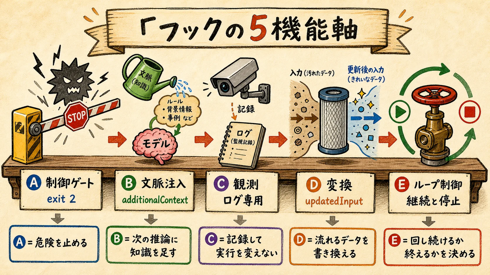
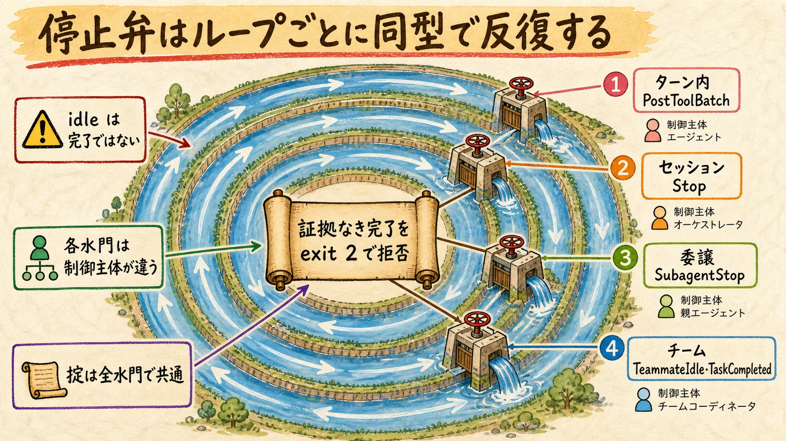
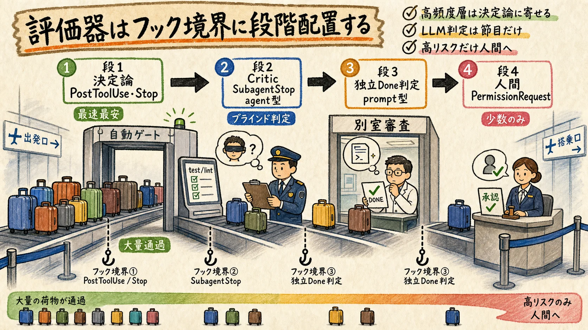

01フックとは何か — 系の割り込み点
プロンプトはモデルへの「お願い」、フックは実行系への「配線」。制御の所在が根本的に違う。

フックとは、Claude Code の実行ライフサイクル（起動 → プロンプト受領 → ツール呼び出し → 応答終了 → サブエージェント → コンパクション → 終了）の各遷移の境界に固定配置された、確定的なコールバック点である。モデルが何を「考える」かとは独立に、系のどの瞬間に何が起きるかを外側から規定する。
制御理論の語彙で言えば、フックはプラント（モデル＝非決定的な被制御対象）を囲むコントローラであり、各イベントはセンサ点（観測）とアクチュエータ点（介入）を兼ねる。MAPE-K の枠では、共通入力（session_id / transcript_path / cwd 等）が Knowledge、観測系フックが Monitor、フック内スクリプトが Analyze + Plan、exit 2 / updatedInput / permissionDecision が Execute にあたる。
規約は読まれることを期待するが、フックは発火する。「ルールとして書いたが行動変容ゼロだったため、フックへ昇格させた」という実例（§06 の report-integrity-check）が、この差を最も端的に示している。
02全イベントの地図 — ライフサイクルの駅
約30イベントを路線図で掴む。事前の駅は止められ、事後の駅は観測のみ、終端の駅は判定器の差込点。

読み方の要点は四つ。
- ツール層は「Pre → 権限 → 実行 → Post」の直列パイプ — PreToolUse だけが「何も起こさせない」ことができ、Post 系は観測と差し戻ししかできない。ブロックしたいなら Pre 系、学習させたいなら Post 系
- PostToolBatch は唯一の同期点 — 並列ツール束の全解決後・次のモデル呼び出し前。ターン内ループの停止弁はここにしか置けない
- Stop / SubagentStop / TeammateIdle・TaskCompleted はそれぞれターン・委譲・協調の終端 — 同じ「終わろうとする瞬間に判定器を差す」構造がスコープごとに反復する
- 割り込み層（Compact / Config / Cwd / File / Elicitation）は直列軸に属さない — 特に PreCompact → PostCompact はコンテキスト窓の境界で、圧縮前の状態外部化・圧縮後の再水和という記憶運搬の要所
| イベント | 発火点 | exit 2 | 主要出力 / 軸 |
|---|---|---|---|
| セッション層 | |||
| SessionStart | 開始・再開（startup/resume/clear/compact） | ✗ | additionalContext・watchPaths・reloadSkills ／ B注入 |
| Setup | --init / --maintenance | ✗ | additionalContext ／ B注入 |
| InstructionsLoaded | CLAUDE.md / rules 読込ごと | ✗ | ログ専用 ／ C観測 |
| SessionEnd | 終了（clear/logout/exit…） | ✗ | cleanup・メトリクス収集 ／ C観測 |
| ターン層 | |||
| UserPromptSubmit | プロンプト送信直後・処理前 | ✓ 阻止 | decision:block・additionalContext ／ A・B |
| UserPromptExpansion | スラッシュコマンド展開時 | ✓ 阻止 | decision:block ／ A |
| Stop | 応答終了時＝判定器の差込点 | ✓ 継続強制 | decision:block・additionalContext ／ A・E |
| StopFailure | API エラー終了（rate_limit 等） | ✗ | ログ専用 ／ C |
| MessageDisplay | テキスト表示時 | ✗ | displayContent（表示のみ差替・transcript 不変）／ D変換 |
| Notification | 通知送出時 | ✗ | terminalSequence ／ C |
| ツール層 | |||
| PreToolUse | ツール実行前 | ✓ 阻止 | permissionDecision(allow/deny/ask/defer)・updatedInput ／ A・D |
| PermissionRequest | 権限ダイアログ時 | ✓ deny | decision.behavior・permissionRule（永続化）／ A・D |
| PermissionDenied | auto mode 拒否後 | ✗ | retry:true ／ C・D |
| PostToolUse | ツール成功後 | ✗（差し戻しは可） | updatedToolOutput・additionalContext ／ B・C・D |
| PostToolUseFailure | ツール失敗後 | ✗ | additionalContext（エラー診断注入）／ B・C |
| PostToolBatch | 並列束の全解決後・次推論前 | ✓ ループ停止 | decision:block ／ A・E |
| 委譲・チーム層 | |||
| SubagentStart | サブエージェント起動時 | ✗ | additionalContext（規約・境界の注入）／ B |
| SubagentStop | サブエージェント終了時 | ✓ 継続強制 | decision:block ／ A・E |
| TaskCreated | タスク生成時 | ✓ ロールバック | continue:false ／ A・E |
| TaskCompleted | 完了マーク時 | ✓ 完了阻止 | continue:false ／ A・E |
| TeammateIdle | teammate の idle 直前 | ✓ idle 阻止 | continue:false ／ A・E |
| 環境・割り込み層 | |||
| PreCompact | コンパクション直前（manual/auto） | ✓ 阻止 | decision:block ／ A・E |
| PostCompact | コンパクション完了後 | ✗ | ログ専用 ／ C |
| ConfigChange | 設定ファイル変更時 | ✓ 棄却（policy 除く） | decision:block ／ A・C |
| CwdChanged | 作業 dir 変更時 | ✗ | CLAUDE_ENV_FILE（direnv 連携）／ C |
| FileChanged | 監視ファイル変更時 | ✗ | change_type ／ C |
| WorktreeCreate | worktree 作成時 | 非0で失敗 | worktreePath（既定 git 挙動を置換）／ D |
| WorktreeRemove | worktree 削除時 | ✗ | cleanup ／ C |
| Elicitation | MCP の入力要求時 | ✓ deny | action(accept/decline/cancel)・content ／ A・D |
| ElicitationResult | elicitation 応答後・返送前 | ✓ decline 化 | action・content ／ A・D |
※ 2026-07 公式リファレンス（code.claude.com/docs/en/hooks）2回の独立フェッチで照合。公式一覧表は31イベント掲載で、1種は個別仕様未取得。グローバル出力 continue:false / stopReason / suppressOutput / systemMessage / terminalSequence は全イベント共通。
日本語圏の「14イベント」解説は旧世代のスナップショット。PostToolBatch・TeammateIdle・TaskCreated/Completed・WorktreeCreate・ConfigChange・Elicitation 系はその後に追加された現行世代であり、古い記事と本ページの差は矛盾ではなくバージョン差である。
035機能軸 — 欲しい能力から逆引きする
イベントの羅列は覚えられない。機能軸で束ねると「欲しい能力 → 置くべきフック」が逆引きできる。

| 軸 | 本質 | 主なイベント | 動いている実例 |
|---|---|---|---|
| A 制御ゲート | 物理的に遷移を止めるリミッタ。安全と完了規律を担保 | PreToolUse / PermissionRequest / Stop / SubagentStop / PostToolBatch / Task系 / PreCompact / ConfigChange | 危険コマンドブロック、commit 前 typecheck/test/lint ゲート、secret 漏洩阻止 |
| B 文脈注入 | 次の推論に入る前に知識を差し込む（記憶の read-path） | SessionStart / SubagentStart / PostToolUse / UserPromptSubmit / Stop | git status・README 自動注入、モデル条件付き playbook 注入、前提裏取りの問いかけ |
| C 観測 | 記録するが実行を変えない（センサ専用）。監査性の源泉 | PostToolUseFailure / StopFailure / InstructionsLoaded / SessionEnd / FileChanged / Notification | 全 Bash 監査ログ、日次メトリクス JSONL、スキル起動記録 |
| D 変換 | 流れているデータを書き換える（無害化・正規化・マスク） | PreToolUse(updatedInput) / PostToolUse(updatedToolOutput) / MessageDisplay / WorktreeCreate | 引数の正規化、表示層の機密マスク（transcript 不変）、worktree パス規約 |
| E ループ制御 | 反復の継続・停止・分岐を司る遷移規則そのもの | Stop / SubagentStop / TeammateIdle / PostToolBatch / TaskCompleted / PreCompact | テスト green まで停止拒否、品質未達 subagent の差し戻し |
A と E は重なるが視点が違う。A は「危険だから止める」個別ゲート、E は「反復構造をどう回し続け・どう終えるか」というループの遷移規則。C（観測）に制御を持たせるとセンサとアクチュエータが混線し、系が発振する — 軸 C は記録専用に保つ。
04ループ制御 — 停止弁は境界ごとに同型で反復する
「Stop hook は外側ループの一般化、/goal はその session-scoped 特化形」— この主張はマルチエージェント境界へ同型に拡張される。

| ループ層 | 制御主体 | 停止弁フック | 一般化された停止判定 |
|---|---|---|---|
| meso（1ターン内） | モデル自身 | PostToolBatch | 束の解決後・次推論前に「これ以上回すか」を決める |
| macro（セッション） | ハーネス / ユーザー | Stop | 成果条件を証拠で判定。/goal の一般化 |
| macro（委譲） | 親エージェント | SubagentStop | 委譲先の完了を親の基準で採点（Maker-Checker の Checker） |
| macro（並列チーム） | lead | TeammateIdle + TaskCompleted | 未達の idle を拒否・証拠なき完了マークを拒否（fan-in の停止規則） |
| meta（コンテキスト境界） | ハーネス | PreCompact / PostCompact | ループを跨ぐ知識の圧縮点・作業状態の外部化境界 |
とりわけ TeammateIdle は理論的に示唆深い。単一エージェントでは「止まる＝完了 or 行き詰まり」だが、マルチエージェントでは一体が idle になることは全体の完了を意味しない（idle 通知を完了と誤認する障害は実運用で頻出する）。TeammateIdle はこの罠への「遊ばせない負帰還」を、規約ではなくフック層で提供する。
「良いループは作業ループではなく証拠生成ループ」をフック層に降ろすと、「各制御境界の Stop 系フックが、証拠なき停止・完了を exit 2 で拒否する」という具体的な規則になる。
05評価器の設置点 — cheap-to-expensive カスケード
評価器は感想役ではなく、継続・停止・差し戻しを決める遷移関数。フックはその設置スロットの集合である。

| カスケード段 | 設置フック | maker / checker 分離の形 |
|---|---|---|
| 段1 決定論（test / lint / git） | PostToolUse・Stop（command 型） | コードが判定しモデルは判定しない。最高頻度・最安 |
| 段2 Critic（重大欠陥の指摘） | Stop・SubagentStop（agent 型） | fresh-context の reviewer。改善履歴を渡さない blind 判定 |
| 段3 独立 Done 判定 | Stop（prompt 型）・PostToolBatch | maker と別の判定器。No が additionalContext で次ターンの指令になる |
| 段4 HITL（高リスクのみ） | PermissionRequest・PreToolUse（ask） | 人間ゲート。破壊的操作を同期で止めて承認へ回す |
| 記憶の write / read 評価 | PostToolUse（書込時）・SessionStart（読込時） | 長期記憶の二重審査をフック境界で実装 |
- Maker-Checker 分離の最適地は Stop / SubagentStop / PostToolBatch — 作業が一区切りした瞬間に、履歴を持たない fresh evaluator を差せる
- 証拠第一を強制できるのは PostToolUse — テストの exit code・git status・HTTP 200 という環境証拠は、ツール実行直後にしか鮮度よく捕捉できない
- verdict は遷移主体に届いて初めて遷移関数になる — SubagentStop の判定は親へ、TaskCompleted の判定は lead へ。フックの出力契約はこの配線そのもの
判定器の実装形式はフックの type で差し替えられる: command（決定論・600s）/ prompt（小型モデルの合否判定・30s）/ agent（ツールを使う実地検証・60s・実験的）。/goal が「prompt-based Stop hook の session-scoped ラッパー」である構図は、この type 体系の帰結である。
評価器の自己承認は分離の崩壊。Stop hook 内の判定器に作業者本人の文脈・改善履歴を渡すと判定が甘化する（Goodhart / 報酬ハッキング）。fresh-context・blind・目的ベースの判定器を差すこと。
06実践カタログ — 国内外の定番と一歩先の実装
国内外30件超の事例は人気4イベントに集中する。定番を押さえた上で、空白イベントと自己言及的な設計に伸びしろがある。
| イベント | 定番パターン（海外 / 国内で確認） |
|---|---|
| PreToolUse | 危険コマンドブロック（rm -rf / force push / DROP TABLE）、.env・秘密鍵アクセス遮断、deploy 前テスト強制、MCP rate-limit、diff サイズ制限（500 行超で分割要求） |
| PostToolUse | Prettier / ESLint / Ruff 自動整形（「やります」と言うだけの実装忘れを 100% 実行に変える）、監査ログ、doc 更新の再プロンプト |
| Stop | テスト green まで停止拒否（Ralph Wiggum 型自律ループ）、agent 型の最終検証、TTS / Slack / macOS 通知（国内で特に厚い） |
| SessionStart | README・git status・環境変数の自動注入、前回セッション状態の復元 |
| UserPromptSubmit | キーワード自動挿入（「ルールを忘れる」問題対策）、プロンプト事前検査 |
| SessionEnd | メトリクス収集、Obsidian 同期（セカンドブレイン化） |
実運用30本の実装（筆者環境 ~/.claude/scripts/hooks/）から抽出できる、一歩先の設計を4つ挙げる。
| 実装 | 何が本質的か |
|---|---|
| bundle-detector （UserPromptSubmit） | 複数目的の一括要求を検出して Plan-First を強制するゲート。検出後の次プロンプトの変化を自己ラベリングして誤検知率を学習する — フック自身が自分の判定品質を測る評価器付きゲート |
| report-integrity-check （Stop） | 完了宣言と同ターン内の失敗痕跡の共起を検出（「デプロイ完了」と npm ERR! の同居を警告）。報告誠実性の規約をフックへ昇格させた実例 |
| git-commit-gate （PreToolUse） | typecheck/test/lint 並列ゲート。依存不在の偽失敗を BLOCK でなく ENV_SKIP に自動分流し、既存負債はベースライン記録して新規増分のみ止めるラチェット式 — 偽陽性を構造的に潰す |
| hook-manifest-check （SessionStart） | 期待名簿と実登録を突合し、無音失効（配線が外れたのに気づかない）と orphan（スクリプトはあるが配線なし）を検知 — フックによるフックの監査 |
実装30本に共通する5原則: ①フェイルオープン（フック障害で作業を止めない）②ログなきフックは計測不能（判定を JSONL に記録）③透明 bypass（理由必須の脱出口）④アラート疲労の設計（発火上限・ベースライン比較・同一警告1回）⑤フックによるフックの監査（無音失効の検知）。
事例が薄いイベントは伸びしろでもある: TaskCompleted での成果物実在検査（mtime・テスト証拠 — 「idle ≠ done」の機械化）、WorktreeCreate での依存事前コピー、ConfigChange での危険な設定変更の棄却、MessageDisplay での表示層マスクなど（いずれも設計提案・事例未確認）。
07アンチパターンと運用
フックは制御力と攻撃面を同時に増やす。落とし穴・デバッグ・自己保全までが設計の範囲。
exit 2 乱用でループが止まらない。Stop hook が常に exit 2 を返すと、成果条件を満たしても永久に回る。stop_hook_active フラグの確認（再入時は exit 0）と、保険条件（max turns / budget / no-progress cap）をフック内に必ず持つ — コミュニティで最も繰り返し警告される失敗。
フックはユーザー権限の任意コード実行＝信頼境界。悪意ある settings.json のフック定義や、外部由来テキストを無検査で additionalContext に流す注入経路は、プロンプトインジェクションより深い層で系を乗っ取る。フックを1本足すことは信頼境界を1つ増やすこと。
- 重い同期処理を高頻度フックに置かない — PreToolUse の重処理は毎ツールでレイテンシに乗る。重い検証は節目フックか非同期へ
- フックの騒音 — 成功通知や advisory の出しすぎは本物のエラーを埋める。観測系は原則
suppressOutput、出力は「判断根拠 or エラー」に限る - stdout の汚染 — debug 出力は stderr へ。stdout は契約された JSON のみ（shell profile の echo 混入で JSON パースが壊れる）
- 多重フックの合成は deny 優先 —
deny > defer > ask > allow。ゲートの追加は常に系を厳しくする方向にしか働かないので、追加時は false positive の予算を先に決める
デバッグの定跡: ① /hooks で登録確認（設定はセッション開始時スナップショット — 編集後は新セッション）→ ② claude --debug で実行トレース → ③ 環境要因（timeout バイナリ不在・隔離 worktree の依存不在による exit 127 偽失敗）→ ④ 無音失効は名簿突合で仕組み化。
// settings.json 最小スケルトン — 判定形式は type で差し替える { "hooks": { "PreToolUse": [ { "matcher": "Bash", "hooks": [ { "type": "command", "command": "bash ~/.claude/scripts/hooks/my-gate.sh", "timeout": 30 } ] } ], "Stop": [ { "hooks": [ { "type": "prompt", "prompt": "transcript にテスト成功の証拠(exit 0)があるときだけ ok:true。自己申告のみなら ok:false と不足根拠を reason に。" } ] } ], "SubagentStop": [ { "hooks": [ { "type": "agent", "prompt": "変更ファイルを読み受け入れ基準で pass/fail 判定。diff の作成経緯は参照しない。", "timeout": 120 } ] } ] } }
結論
- ブロックしたいなら Pre 系、学習させたいなら Post 系 — exit 2 の効果は事前か事後かで決まる
- 高頻度層は決定論、節目は LLM 判定、高リスクは人間 — 判定形式は type（command / prompt / agent）で差し替えられる
- 証拠なき停止・完了を exit 2 で拒否する — これが Stop / SubagentStop / TeammateIdle / PostToolBatch に共通する停止規律
- フックは入れっぱなしにすると沈黙したまま死ぬ — 無音失効の検知（名簿突合）まで含めて設計する
- フックを1本足すことは信頼境界を1つ増やすこと — 制御力と攻撃面は同時に増える